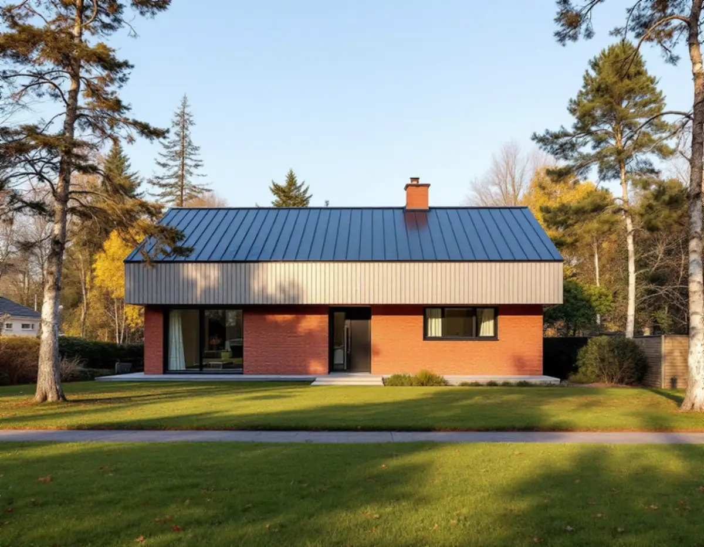
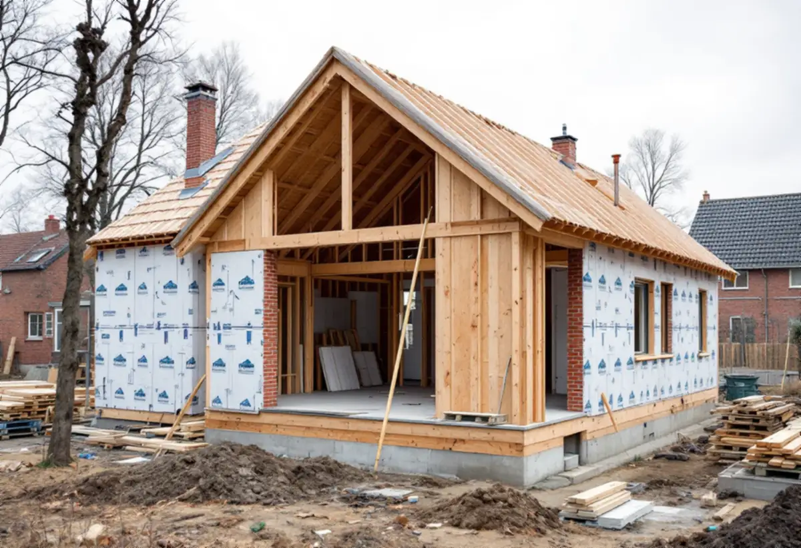

Platsbesök
Vi tittar på huset, tomten och var volymen kan läggas – uppåt eller utåt.
Sollentuna kommun räknar allt som gör huset större som en tillbyggnad – uppåt, åt sidan eller nedåt. Samtidigt har byggreglerna bytts ut, och kommunens mall för kontrollplan finns inte att få just nu. Geal Entreprenad AB bygger till villor och småhus som total entreprenad, från ritning till färdigt hus. Här går vi igenom vad som gäller för tillbyggnaden och handlingarna.

Med tillbyggnad menar Sollentuna kommun alla åtgärder som ökar en byggnads volym, oavsett riktning. En ny våning ovanpå huset är alltså lika mycket en tillbyggnad som ett nytt rum mot trädgården, och även en volymökning nedåt räknas.
Riktningen avgör om du behöver bygglov. Lovfria tillbyggnader på ett en- eller tvåbostadshus får tillsammans omfatta högst 30,0 kvadratmeter brutto- eller öppenarea och får inte gå över byggnadens taknock. En påbyggnad som höjer huset kräver därför bygglov, liksom en tillbyggnad inom ett kulturhistoriskt värdefullt område eller på en byggnad som är kulturhistoriskt värdefull.
Tidigare attefallstillbyggnader, lovfria takkupor och skärmtak ingår i beräkningen av de 30 kvadratmetrarna. Bor du i radhus, kedjehus eller andra sammanbyggda småhus beror möjligheterna på hur bebyggelsen är utformad, och kommunen hänvisar då till sitt Kontaktcenter för vägledning.

Boverkets byggregler, BBR, och reglerna om konstruktion, EKS, har ersatts av ett antal nya författningar, en för varje sakområde, som brand, buller, bärförmåga och energi. Enligt Boverket upphävdes BBR den 1 oktober 2026. För energihushållning och värmeisolering får de äldre bestämmelserna i BBR 31 ändå tillämpas under en begränsad tid, om vissa förutsättningar är uppfyllda. Sollentuna kommun skriver att bara de nya byggreglerna gäller från den 1 juli 2026.
Varje ny författning avslutas med regler för ändring av byggnader, och kraven är formulerade som funktioner snarare än som anvisade lösningar. I föreskrifterna om bostäders lämplighet för sitt ändamål står till exempel att det vid en ändring ska klarläggas om huset har brister i lämplighet som kan åtgärdas inom ramen för arbetet, om åtgärden kan försämra lämpligheten i det befintliga huset och hur en negativ påverkan på kulturvärden kan undvikas. Vid ändring får enligt Boverket erfarenheter från den befintliga byggnaden användas.
Ansvaret ligger hos byggherren även när ingen lov eller anmälan krävs. Därför bestämmer vi tidigt vilken regelversion projektet följer och skriver in det i handlingarna.
Kommunen beskriver i detalj vad ritningarna till ett bygglov för tillbyggnad ska visa. På situationsplanen, oftast i skala 1:400 eller 1:500 som kommunens karta, ritas tillbyggnadens ytterväggar – inte betongplattan eller taket. Alla sidors mått anges, och avståndet till tomtgränsen måttsätts med en linje i rät vinkel mot gränsen.
Fasadritningen i 1:100 visar befintlig marknivå med streckad linje och ny marknivå med heldragen, markerar tydligt vad som byggs till och anger material, färg och vilket väderstreck varje fasad ses från. Planritningen visar rumsindelning, fast inredning, nya väggar och väggar som rivs. Sektionen visar rumshöjd, takvinkel och eventuella nivåskillnader mellan huset och tillbyggnaden.
Det är ofta i sektionen som problemen syns: ett golv som hamnar på en annan nivå eller ett tak som inte möter det gamla. Äldre ritningar på huset finns kostnadsfritt i kommunens bygglovsarkiv, och vi börjar med dem. Ska tillbyggnaden få ett nytt badrum, läs om badrumsrenovering i Sollentuna.
En kontrollplan behövs oftast när du ansöker om bygglov eller gör en anmälan. Sollentuna kommun erbjuder för närvarande ingen mall för kontrollplaner, eftersom en ny version tas fram med anledning av de nya byggreglerna. Kommunens ambition är att erbjuda tjänsten igen under hösten 2026, och fram till dess får byggherren ta fram planen på egen hand.
Enligt plan- och bygglagen ska kontrollplanen ange vilka kontroller som ska göras och vilka krav de avser, vem som gör dem och hur, vilka anmälningar som ska göras och vilka arbetsplatsbesök nämnden bör göra. Nämnden får besluta att en kontrollplan inte behövs för enklare åtgärder. Är det du vill göra mer omfattande behövs enligt kommunen också en anmälan av kontrollansvarig.
Vi upprättar ett förslag till kontrollplan som följer arbetets ordning, från grund och stomme till tätskikt och anslutningar. Kommunen anger en handläggningstid på ungefär 2–5 veckor för bygglov för tillbyggnad men skriver att den just nu är längre än vanligt.
Vi tittar på huset, tomten och var volymen kan läggas – uppåt eller utåt.
Planen och husets gamla ritningar hämtas från kommunens tjänster.
Nivåer, rumshöjder och takanslutning ritas innan något annat bestäms.
Ett skriftligt förslag som skiljer ROT-berättigat arbete från material och handlingar.
Situationsplan, plan, fasad, sektion och förslag till kontrollplan lämnas in.
Kontrollerna i planen görs och dokumenteras under bygget.
Rotavdraget är 30 procent av arbetskostnaden, högst 50 000 kronor per person och år och högst 75 000 kronor tillsammans med rutavdrag. Material och resor ger inget avdrag.
Skatteverket godkänner en tillbyggnad av ett småhus om en av dess sidor sitter ihop med den befintliga ytterväggen till minst 75 procent eller om det finns en dörr mellan delarna. Bostaden ska vara äldre än fem år och större delen av stommen ska behållas. Ritningar och bygglovshandlingar ger inget avdrag, så de redovisas separat. Avdraget dras direkt på fakturan.
Om huset byggs på på höjden eller utåt, hur grunden ska göras och hur mycket av det befintliga som måste byggas om för att klara anslutningen styr mest. Du får ett skriftligt kostnadsförslag efter ett gratis platsbesök.
Mer boyta i samma hus.
Tillbyggnad →Takbyte, takbesiktning och plåtarbeten.
Takläggare i Sollentuna →Norrviken, Tureberg och Edsberg.
Takrenovering i Sollentuna →Radhus, villa och en extra bostad.
Attefallshus i Sollentuna →Tillbyggnad, tomtdelning och lov.
Byggföretag i Sollentuna →Ny kulör och lov i villastaden.
Fasadmålning i Sollentuna →Buller, ljudglas och radhus i Sollentuna.
Fönsterbyte i Sollentuna →Täta gamla fönster med ventilationen i åtanke.
Fönsterrenovering i Sollentuna →Radhus i Sjöberg och villor nära stationerna.
Golvläggare i Sollentuna →Massivt trä eller lamell – vad går att slipa.
Golvslipning i Sollentuna →Villastad och radhuslängor.
Köksrenovering i Sollentuna →Radhusplåt, bleck och rännor i Sollentuna.
Plåtslagare i Sollentuna →Ansökan, solceller och radhus.
Takbyte i Sollentuna →Ny tapet efter prov av väggen.
Tapetsering i Sollentuna →Villastad, radhus och ventilationen.
Badrumsrenovering i Sollentuna →Villor och radhus i Sollentuna.
Fasadrenovering i Sollentuna →Villor och radhus i Sollentuna.
Målare i Sollentuna →Altaner, uterum och bryggor.
Snickare i Sollentuna →Radon med i planen för hela huset.
Totalrenovering i Sollentuna →